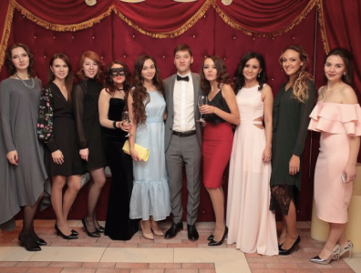
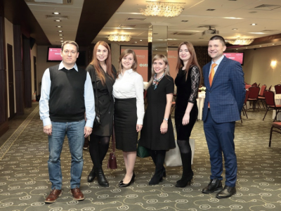
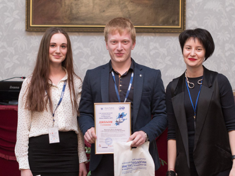

Корпоративная жизнь
Спорт и отдых
ГК «Миррико» ведет активный образ жизни. Наши сотрудники участвую в спортивных состязаниях, являются лидерами и призёрами таких мероприятий, как Казанский марафон и Ironstar, участвуют в социальных проектах и корпоративных поездках.

Казанский марафон 2019
Более 40 мирриковцев преодолели различные дистанции (от 3 до 42, 2 км) в рамках одного из самых масштабных спортивных мероприятий Республики Татарстан — TIMERMAN. Суммарное время всех бегунов...
30 августа 2020
Обучение
Сотрудники нашей компании непрерывно обучаются, участвуют в круглых столах, сессиях и обучающих тренингах. В ГК «Миррико» реализован проект «Клуб Лидеров Миррико», благодаря которому мы формируем внутренний кадровый резерв из числа сотрудников. У резидентов клуба есть уникальный шанс обмениваться опытом с наставниками и коллегами, поработать с менторами, принять участие в проектах и решении стратегических задач.
Ежегодное повышение квалификации
Сотрудники ГК «Миррико» приняли участие в триатлоне IRONSTAR-2018, в том числе в максимальной дистанции – 113 км (1,9 км плавания, 90 км велогонки, 21 км бега).
30 августа 2020
Корпоративы, игры и развлечения
Сотрудники компании не только успешно решают бизнес-задачи, но и плодотворно отдыхают, принимая участие в играх и развлекательных мероприятиях. Корпоративная жизнь ГК «Миррико» насыщена разнообразными турнирами, КВИЗами, творческими конкурсами, а лучшие сотрудники могут раз в квартал позавтракать с Генеральным директором. Помимо спортивных и интеллектуальных мероприятий, компания с интересом проводит досуг, как на совместных корпоративах, так и на командообразующих программах внутри бизнес-единиц.

Все мероприятия
Новогодний корпоратив #МиррикоВМасках
20 декабря в ресторане Love Story сотрудники ГК «Миррико» отпраздновали новогодний корпоратив. Помимо развлекательной части в программе были подведены итоги ежегодного конкурса «Энергия Миррико»: ...
30 августа 2020
Внешние мероприятия
Сотрудники компании не только успешно решают бизнес-задачи, но и плодотворно отдыхают, принимая участие в играх и развлекательных мероприятиях. Корпоративная жизнь ГК «Миррико» насыщена разнообразными турнирами, КВИЗами, творческими конкурсами, а лучшие сотрудники могут раз в квартал позавтракать с Генеральным директором. Помимо спортивных и интеллектуальных мероприятий, компания с интересом проводит досуг, как на совместных корпоративах, так и на командообразующих программах внутри бизнес-единиц.

Все мероприятия
Финальная игра корпоративного турнира ГК «МИРРИКО» Квиз
С7 декабря в развлекательном комплексе отеля «Ривьера» прошла главная интеллектуальная битва ГК «Миррико» – финал турнира КВИЗ. В результате состязания первое место заняла команда инженера-технолога ...
30 августа 2020
Фотогалерея

Международная конференция Kazan Upexpro 2017
С7 декабря в развлекательном комплексе отеля «Ривьера» прошла главная интеллектуальная битва ГК «Миррико» – финал турнира КВИЗ. В результате состязания первое место заняла команда инженера-технолога ...
30 августа 2020